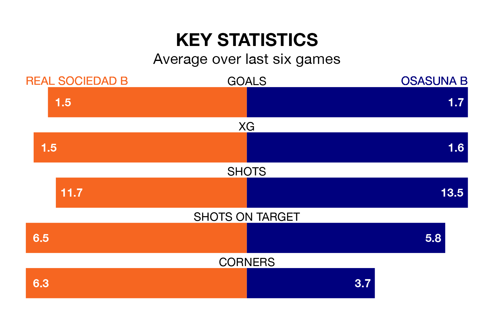

Osasuna B face a challenge to maintain their high-scoring form away against a tight Real Sociedad B defence on Sunday.
With 25 goals in 18 games, Osasuna B are the joint-third-highest scorers in Primera Division RFEF Group 1 ahead of the 7pm kick-off at the Estadio Zubieta XXI.
They face a Sociedad B side who have scored 22 in 18 matches, but conceded only 15 goals, putting them joint-fourth among the league's tightest defences – only SD Ponferradina, Cultural y Deportiva Leonesa and Gimnàstic de Tarragona have conceded fewer goals.
In Ander Yoldi Aizagar, Osasuna B have the league's most on-form striker so far this season. He has notched one goal in one appearance.
Sociedad B's top scorer, with one goal in one game, is Jon Magunacelaya Argoitia.
The home team are fifth in the table after 18 games, of which they have won seven and drawn nine, earning 30 points.
The visitors are five places behind Sociedad B in 10th, with seven wins and four draws putting them on 25 points.
Sociedad B are in mixed form in Primera Division RFEF Group 1, with two wins and two draws from their last six games.
With two wins and three draws over that period, Osasuna B's form is slightly better – they have taken nine points from 18, compared to the hosts' eight.
Over the last two years, Sociedad B and Osasuna B have played each other twice. Sociedad B won one of them and they drew the other.
Their last meeting was on May 20, when Sociedad B won 1-0 away.
Sociedad B's last match was on January 4, a 2-1 loss against Deportivo La Coruña, with Magunacelaya Argoitia getting the goal for Sociedad B.
Osasuna B beat SD Logroñés 3-0 last time out, also on January 4, with Yoldi Aizagar (two) and Rubén Azcona Mayayo on the scoresheet.
Updated: 13:38 (UTC), 10/01/24